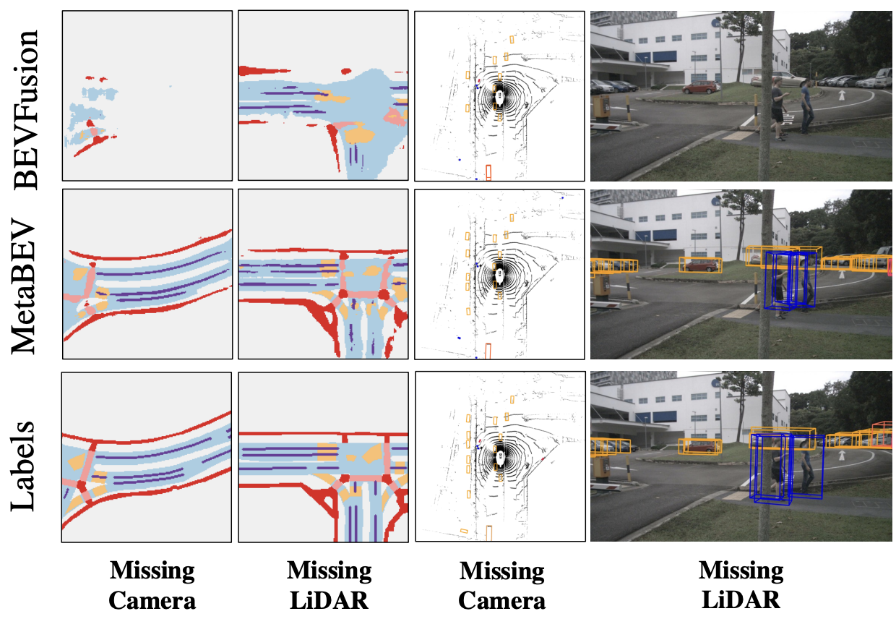
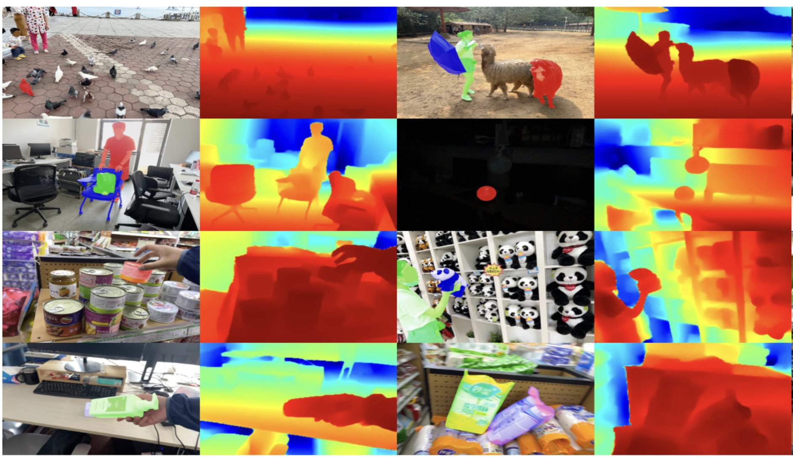

|
I am currently a research intern at AI Theory Lab of Huawei Noah's Ark Lab (Shen Zhen). I am also a Research Assistant at The University of Hong Kong and a PhD Candidate at DLUT. During my PhD time, I have been fortunate to work under the supervision of Prof. Huchuan Lu and Prof. Ping Luo. Email / CV / Google Scholar / Github |

|
Research InterestsIn 2023, I participate in the following research topics:
Previously, I did research on 2D/3D detection, segmentation and object tracking. Representative works include MetaBEV for 3D objection detection and segmentation and ARKitTrack for 2D object tracking. |
News
|
Selected PublicationsFor the latest full list please check here. AIGC (Text-to-Image Diffusion) |

|
Junsong Chen*, Jincheng Yu*, Chongjian Ge*, Lewei Yao*, Enze Xie, Yue Wu, Zhongdao Wang, James Kwok, Ping Luo, Huchuan Lu, Zhenguo Li, ICLR, 2024 (Spotlight) project page / arXiv / Demo / code star PixArt-α is a Transformer-based T2I diffusion model whose image generation quality is competitive with state-of-the-art image generators (e.g., Imagen, SDXL, and even Midjourney), and the training speed markedly surpasses existing large-scale T2I models, e.g., PixArt-α only takes 12% of Stable Diffusion v1.5's training time (753 vs. 6,250 A100 GPU days). |
Perception (object detection/segmentation/tracking) |
|  |
Chongjian Ge*, Junsong Chen*, Enze Xie, Zhongdao Wang, Lanqing Hong, Huchuan Lu, Zhenguo Li, Ping Luo ICCV, 2023 project page / arXiv / Youtube / code star MetaBEV is a 3D Bird-Eye's View (BEV) perception model that is robust to sensor missing/failure, supporting both single modality mode (camera/lidar) and multi-modal fusion mode with strong performance. |
|  |
Haojie Zhao*, Junsong Chen*, Lijun Wang, Huchuan Lu, CVPR, 2023 project page / arXiv / Youtube / code star ARKitTrack, a new RGB-D track-ing dataset for both static and dynamic scenes captured by consumer-grade LiDAR scanners equipped on Apple’s iPhone and iPad. ARKitTrack contains 300 RGB-D sequences, 455 targets, and 229.7K video frames in total. Along with the bounding box annotations and frame-level attributes. |